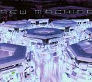

| Artist: | New Machine |
| Title: | New Machine |
| Label: | Mascot Records |
| Length(s): | 51 minutes |
| Year(s) of release: | 2003 |
| Month of review: | [11/2003] |
| 1) | Going Home | 1.41 |
| 2) | New Horizon | 5.08 |
| 3) | Falling | 4.14 |
| 4) | Blood In The Ocean | 4.12 |
| 5) | In The Wake | 4.36 |
| 6) | Cold | 5.11 |
| 7) | Forgotten Man | 4.53 |
| 8) | Meant To Be | 4.30 |
| 9) | A Thousand Lies | 5.21 |
| 10) | Waterfront | 11.22 |
Falling is the next one up, repetitive acoustic playing with harmony vocals similar to the Eagles. But this is not for long, because the band (well, duo) rocks away for a powerful chorus. Rhythm guitars also figure strongly in places, making this an eventful song. With Blood In The Ocean we arrive at more ballad like material. Actually, this is a very melodic and sweet song, probably too sugary for some here, but the quality is undeniable. Some great guitar emotional guitar work here too.
In The Wake opens with rough guitar work, plenty of rhythm guitar work. This is strongly reminiscent of Rush and I wonder if we have our first instrumental here (think La Villa Strangiato here). Again, excellent songwriting, everything fits. This is a bit of a stop-and-go track, slowly and heavy at some point, heavy and flowing at another. Heavy stuff.
Keyboards, synths strings and rhythm guitars hit it off on Cold. The vocals are deliberately left devoid of melody (well, almost). The music seems to become somewhat heavier now, although the accessibility stays high. Again, the chorus is instantly memorable. I keep thinking, hey they stole this, but then I remember: I heard it on my earlier listens of this album. Okay, okay, I did not mean that about getting heavier. The song continues with classically styled piano and sampled vocals played as a pipe organ (I heard later from the band that no samples were used and Garcia did in fact sing this. But the catchy guitar rock returns.
Ah see, Forgotten Man kicks off energetically too. Strong guitar work again. Plenty of variation, with recurring passages and powerful playing.
Ballad time on Meant To Be, a sugary but again succesful one. Would they have made it in the heyday of bands like Foreigner, this could have been a contender. After a song like this it is time to rock again and we do so with A Thousand Lies. Compared to the other tracks, this is a bit of a droning rock track and not as melodic as I have grown used to. The instrumental soloing in the middle is great tho. The build up towards the end is slow and pompous.
Waterfront is more than twice as long as the second longest track and therefore might be considered a song of epic length. The song opens with keyboards and piano, melancholic ballad like material. Then the music becomes more powerful and bombastic, in Styx style. The quieter passages have a strong Floydian feel, but when the acoustic guitar sets in, Spock's Beard is also a likely reference. With a length as this, this song is bound to have everything this duo has to offer, and it does. It does not necessarily mean that this is the best song on the album though, I reserve that honour for New Horizon.
The songs are immaculate, the production is grand and it is simply great to hear something that you can hum along with with after only a one listen without the music having to be shallow. And the band also packs an inviting variety on this single album, not necessarily exploring new territory, but at least keeping the music fresh and optimistic sounding throughout. An unlikely one, but this seems to be one for the year list.